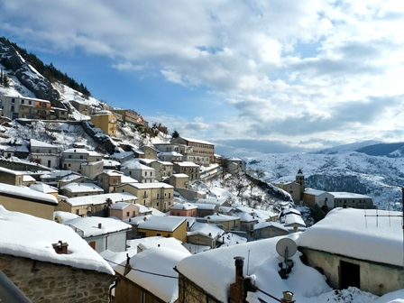

Ed eccoci a Pietrapertosa, sotto la neve, dall'unico posto in cui ho potuto fotografare un frammento di paese; impossibile fare quello che s'avea da fare in questa località (calpestare un po' di Dolomiti Lucane), ma visto il periodo basta essere riusciti ad arrivare...
Tutto il resto del breve programma "Profondo Sud" s'è fatto invece eccome, in lungo, in largo e con ampia soddisfazione!
Ora (per un po'), a casa.
2 commenti